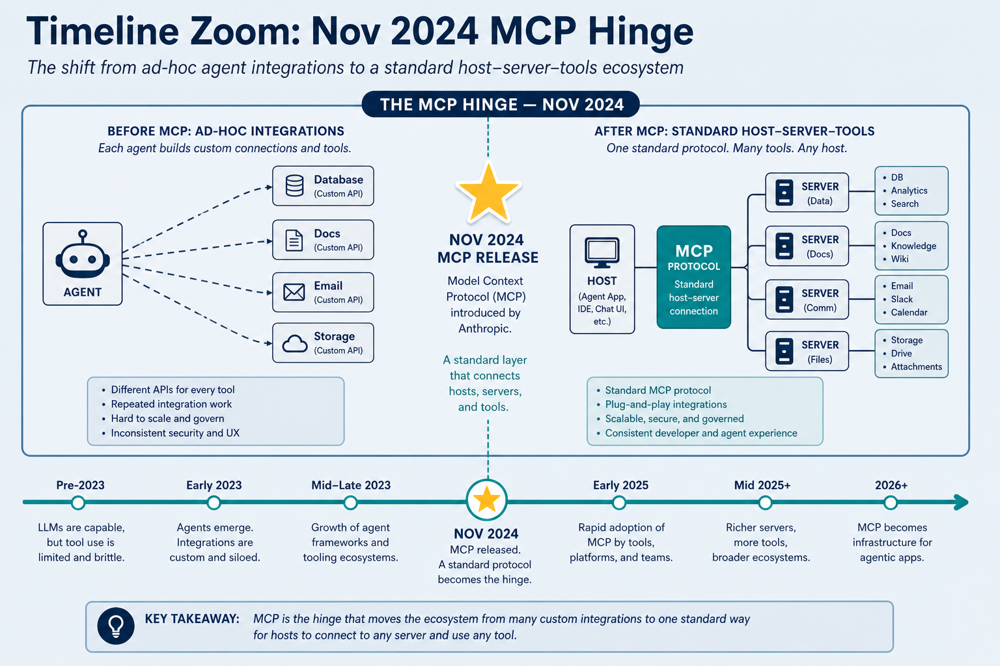

AI timeline · my journey
2023 → present: first LLM exposure → foundations → RAG → agents / automation — anchored to real milestones. Academic roots (Transformer 2017…) underpin concepts; this journey starts in 2023.
Order explains the lab
Fundamentals → RAG → agents
Concepts arrived in an order that made sense — mapped to industry milestones.
MCP sits on top
Why harness notes sit above tokenize / attention — not replacing them.
Enter anywhere
Timeline shows why older notes still matter when agents break on retrieve or tokenize.
2023 → 2026 at a glance

From understanding models to steering agents — one continuous path. Foundations still fire in agent bugs.
Strip · MCP as the hinge

November 25, 2024 — MCP standardizes agent ↔ tool connection. Lab pivot from “how does GPT work?” to “how does the agent get arms?”
MCP · the Nov 2024 hinge

Before MCP, every product reinvented tool schemas. After MCP, skills/harnesses share a connector language. Pre-hinge mentally = tools as one-off plugins.
Foundations · first LLM exposure
ChatGPT → serious study
Late 2022 GPT-3.5 mainstream → 2023 learning starts.
GPT-4 · Claude 1 · Llama 1
Order: tokenize → embedding → attention → softmax → RAG → train/infer.
Stage takeaway
Without tokenization, vectors, and attention, later “agent” talk is vocabulary without mechanisms.
Stronger models + early coding agents
Wave
Gemini 1.5 (1M) · Claude 3 → 3.5 Sonnet · GPT-4o · Llama 3.1 · o1 · DeepSeek V3.
Coding leap
Claude 3.5 + Cursor — repo-native edit loops go mainstream.
Stage takeaway
Bottleneck moved from “can the model code?” toward “can I steer it in a repo?”
Agent era · MCP · skills · harness
Nov 25, 2024 — MCP
Standard agent ↔ tool. Lab pivots to MCP · skills · harness.
Wave continues
R1 · Claude 4 / Claude Code · GPT-5 · AGENTS.md · skills/rules.
Stage takeaway
Progress is less “new chat UI” and more tools + loop + portable instructions. Harness quality ≈ model IQ.
Model wave + automation · now
2026 wave
GPT-5.5 · Opus 4.8 · Fable 5 / Sonnet 5 · Grok 4.5 (Jul 8) · GPT-5.6.
OpenClaw → Hermess
Unattended loops. Ask: what must stay human-approved?
Stage takeaway
Update field notes; keep pipelines (RAG, train/infer, MCP) stable. Don’t rewrite the lab per launch.
Milestone table
| When | Event | In the lab |
|---|---|---|
| 2023 | first LLM exposure (ChatGPT / GPT-4) | start studying |
| March 2023 | GPT-4, Claude 1, Llama 1 | tokenize · embedding · attention · softmax · RAG |
| 2024 | Gemini 1.5, Claude 3.5, GPT-4o, o1 | coding agents |
| Nov 2024 | MCP launches | mcp (hinge) |
| 2025 | Claude 4 / GPT-5 / R1 · AGENTS.md | harness, skills |
| 2026 | Grok 4.5, Opus 4.8, GPT-5.6 | model notes, automation |
Worked example · how to enter
Stage 1 order
tokenize → … → RAG → train/infer. Then MCP / agents. Recognize “bad retrieve” vs “bad harness.”
Start at Stage 3
mcp + skills-rules + agents — keep Stage 1 as substrate when retrieval fails.
Catch up
Skim Stage 4 + model-notes / agent-automation. Bottleneck: model, harness, or automation scope?
Deeper dive · classify every headline
Why Nov 2024
Shared connector language → lab notes shift to arms (tools) not only brains.
Foundations still fire
Wrong chunking → bad RAG → wrong tool args. Attention/softmax explain why prompts behave.
Coding-agent jump
Prepared 2025 harness comparison — once everyone could code with AI, orchestration differentiated.
AGENTS.md / skills
Portable instructions sit above models: same skill file, different brains.
2026 discipline
Update model-notes; don’t rewrite RAG or train pipelines for each launch.
Headline taxonomy
Foundation science · model release · protocol/harness · automation — open the matching note.
Decision guide
| Situation | Prefer | Avoid / why |
|---|---|---|
| Brand new to LLMs | Stage 1 path (tokenize → … → RAG) | Jumping straight to multi-agent automation |
| Shipping tool-using agents | MCP + skills + harness notes (Stage 3) | Treating ChatGPT plugins as “done” |
| “Which model this week?” | Update model-notes; pin for the task | Rewriting the whole lab stack per launch |
| Agent fails on retrieval-heavy tasks | Revisit embedding / RAG / semantic-search | Only swapping to a bigger chat model |
| Want unattended runs | agent-automation + clear approvals | Giving a harness prod credentials “to try OpenClaw” |
| Confused model vs harness pain | Read agents axes first | Blaming Grok/Opus for missing shell/MCP |
Easy to go wrong
Skip foundations
“Agents are the new thing” — bad retrieve / tokenize still break agent apps.
Rewrite on every launch
Update field notes; keep pipelines stable.
Timeline as dogma
This is my path — yours may start at RAG or harnesses.
Collapse three layers
Model vs harness vs automation — swap one layer at a time.
From understanding → steering
2023–2024
Understand models — tokenize, attention, RAG, train/infer.
Nov 2024+
MCP is the hinge. Steer agents with tools, skills, harnesses.
Now
Harnesses · model waves · OpenClaw / Hermess. 2023 concepts still underpin every agent.
Map the path,
then pick a door.
notes/10-ai-timeline.md — stages, MCP hinge, decision guide. → agents · model-notes · Hermess.
Open note →